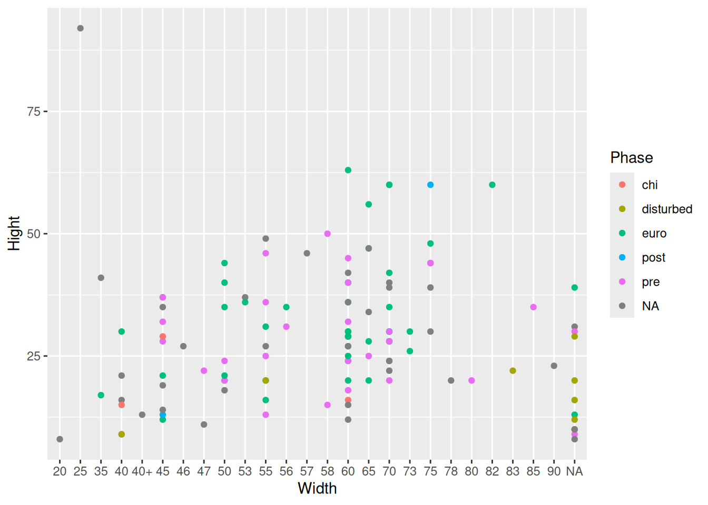

library(tidyverse)
library(here)
xlsx_url <- "https://edu.nl/x4bqv"
download.file(url = xlsx_url, destfile = "data-raw/mortuary-data.xlsx", mode = "wb")Cleaning data with tidyverse
Prerequisites
Knowledge
R basics + Example workflow + Project organisation
Objects
Project organisation
Data cleaning often takes up a large portion of an analysis, especially if the raw data were not collected with the intention to analyse the data in R.
If the raw data are collected with tidy data principles in mind (discussed briefly in EDA: Transforming data with tidyverse), this will greatly reduce the steps needed to clean the data, and allow you to move quickly on to the more fun visualisations and modelling. That being said, cleaning data serves as a nice learning tool to introduce various concepts of the R programming language.
Downloading data
The dataset from An Example Workflow was already cleaned and in .csv format, which is why we were able to read it directly into R using read_csv() and the url. This is not the case with for the .xlsx file we will be working with here, and the read_xlsx() function we will use does not work with a url as the path to the file.
We could go to the site, download it manually, and place it in the data-raw/ folder; but, in the interest of reproducibility, we will create a script to download and clean the data.
Create a new R script called mortuary_data.R, and save it in data-raw/. We can then use the download.file() function to download the dataset using the url for the xlsx download: https://edu.nl/x4bqv.
We will also load tidyverse and here at the top of the script.
Run the code and we should see a file called mortuary-data.xlsx in the data-raw/ folder.
Important
There is NO reason to edit any of the files in the data-raw folder manually.
Raw data should not be modified, and derived data are produced from the analysis script, so they also shouldn’t be edited manually.
Data dictionary
| Variable | Description |
|---|---|
| Layer | Layer of the grave. 1 = Upper culture layer; 2 = Lower culture layer. |
| ID | Unique identifier of burials |
| Burial_axis | Not sure. Not relevant |
| Degree_axis | Not sure. Not relevant |
| Condition | Condition of the burial. 1 = complete; 2 = partial disturbed; 3 = severe disturbed; 4 = unidentified. |
| Gender | Biological sex of the skeletal remains. 1 = Male; 2 = Probable Male; 3 = Female; 4 = Probable Female. |
| Age | Age-at-death of the skeletal remains. 1 = infant (0-2 years); 2 = child (3-12 years); 3 = teenager (12-20 years); 4 = young adult(20-35 years); 5 = middle adult (35-50 years); 6 = old adult (50+); 7 = adult (20+); 8 = approximate adult |
| Length | Length of burial |
| Width | Width of burial |
| Height | Height of burial |
Importing data
To import a .xlsx file, we will need to use the readxl package, which is part of the tidyverse. From the readxl package, we need the function read_xlsx(). This allows us to import data from a .xlsx file. We will use the here() function to ensure our filepath is relative to the project root.
We also need to assign it to an object using the assignment operator, <- to store the data in memory.
raw_data <- read_xlsx(path = here("data-raw/mortuary-data.xlsx"))
Organising your script
It’s a good idea to organise your script, so you (or someone else) can easily read it at a later point. One useful way of organising a script is by adding headers.
Code > Insert Section…
or Ctrl + Shift + R
The raw_data object we have created is a tibble, which is a structure for tabulated data specific to tidyverse. It is a tibble because we used the read_xlsx() function from the readxl package, which is part of tidyverse. If we had used a base R function like read.csv(), we would have created a data frame. Base R does not have a function to import .xlsx files, though, so we needed an additional package for that. Tibbles and data frames are largely interchangeable.
The main thing you need to know is where you are storing the data file. Ideally, this will be in a folder in the root of your project called data. We have made two separate folders (data/ and data-raw/) to distinguish between raw and processed data.
Let’s try to plot the Height and Weight of the burials and group by Phase.
raw_data |>
ggplot(aes(x = Width, y = Height, col = Phase)) +
geom_point()We get the error object 'Height' not found.
Console messages
There are three types of console messages that you will frequently encounter: messages, warnings, and errors.
Messages are just helpful messages to give you some extra information about the code you just ran.
Warnings are messages that tell you that, while your code did run successfully, there may have been some problems with the output that you should double check.
Errors mean your code did not run successfully.
Weird… There should be a variable called Height. Let’s take a look:
names(raw_data) [1] "Layer" "ID" "Burial_axis"
[4] "Degree_axis" "Condition" "Length"
[7] "Width" "Hight" "Pit"
[10] "sampled" "start_layer" "start_depth"
[13] "end_depth" "start_depth_sure" "old_layer"
[16] "Phase" "Coffin" "Straw_mat"
[19] "Gender" "Age" "Agate_bead"
[22] "Golden_bead" "Glass_bead" "Indo-Pacific_bead"
[25] "Glass_earring" "Big_Metal_ring" "Small_Metal_ring"
[28] "Wide_Metal_ring" "Metal_ring" "Bell"
[31] "Knit" "fish_shape_knit" "Metal_string"
[34] "Metal_piece" "Metal_plate" "Hair_pin"
[37] "Niddle" "Bone_plate" "Comb"
[40] "Coin" "Porcelain_bowl" "Porcelain_vessel"
[43] "Porcelain_vase" "Blue_glazed_vase" "Brown_glazed_vase"
[46] "Porcelain_piece" "Ceramic_vase" "Iron_artifact"
[49] "Stone_artifact" "Grinding_stone" "Stone_hammer"
[52] "Stone_axe" "Wood_artifact" "Anping_jar"
[55] "Kendi_mouth" It looks like there’s a typo in the Height variable. Easy fix:
raw_data |>
ggplot(aes(x = Width, y = Hight, col = Phase)) + # change to Hight
geom_point()Warning: Removed 1 row containing missing values or values outside the scale range
(`geom_point()`).
We are creating a plot, but something is not quite right. This is what we’re after:
It looks like we need to take a closer look at the data.
str(raw_data)tibble [125 × 55] (S3: tbl_df/tbl/data.frame)
$ Layer : num [1:125] 1 1 1 1 1 1 1 1 1 1 ...
$ ID : chr [1:125] "0" "1" "2" "3" ...
$ Burial_axis : num [1:125] 1 1 1 1 1 1 1 1 1 1 ...
$ Degree_axis : num [1:125] 290 295 290 290 300 285 310 290 295 300 ...
$ Condition : num [1:125] 3 2 2 1 2 2 3 2 2 1 ...
$ Length : chr [1:125] "115" "102" "104" "130" ...
$ Width : chr [1:125] "70" "60" "75" "82" ...
$ Hight : num [1:125] NA 30 60 60 30 35 13 29 15 60 ...
$ Pit : chr [1:125] "P9" "P051" "P051" "P050" ...
$ sampled : chr [1:125] NA "Y" "Y" NA ...
$ start_layer : num [1:125] 5 14 12 7 2 7 4 8 5 6 ...
$ start_depth : num [1:125] -70 -20 14 -25 -30 -30 -52 -30 -75 4 ...
$ end_depth : num [1:125] NA -50 -46 -85 -60 -65 -65 -59 -90 -56 ...
$ start_depth_sure : chr [1:125] NA NA "Y" "Y" ...
$ old_layer : num [1:125] NA 3 4 4 4 4 4 4 4 4 ...
$ Phase : chr [1:125] "pre" "euro" "post" "euro" ...
$ Coffin : num [1:125] 1 NA 1 1 1 1 1 1 1 1 ...
$ Straw_mat : num [1:125] 0 0 1 0 0 0 0 1 0 0 ...
$ Gender : num [1:125] NA NA NA NA 3 NA NA 1 NA NA ...
$ Age : chr [1:125] NA "4" "2" NA ...
$ Agate_bead : num [1:125] NA NA NA NA NA NA NA NA 8 NA ...
$ Golden_bead : num [1:125] NA NA NA 5 2 2 NA 2 NA 2 ...
$ Glass_bead : chr [1:125] NA NA NA NA ...
$ Indo-Pacific_bead: chr [1:125] NA NA NA NA ...
$ Glass_earring : num [1:125] NA NA NA NA NA NA NA NA NA NA ...
$ Big_Metal_ring : num [1:125] 2 NA NA 2 NA 2 NA NA 2 NA ...
$ Small_Metal_ring : num [1:125] 1 NA NA 2 NA NA 2 NA NA NA ...
$ Wide_Metal_ring : num [1:125] NA NA NA NA NA NA NA NA NA NA ...
$ Metal_ring : num [1:125] NA NA NA NA NA NA NA NA NA 3 ...
$ Bell : num [1:125] NA NA NA NA NA 1 NA NA NA NA ...
$ Knit : logi [1:125] NA NA NA NA NA NA ...
$ fish_shape_knit : num [1:125] NA NA NA 1 NA NA NA NA NA NA ...
$ Metal_string : num [1:125] NA NA NA NA NA 1 NA NA NA 1 ...
$ Metal_piece : num [1:125] NA NA NA NA NA NA NA NA NA NA ...
$ Metal_plate : num [1:125] NA NA NA NA NA NA NA NA NA NA ...
$ Hair_pin : num [1:125] NA NA NA NA NA NA NA NA NA NA ...
$ Niddle : num [1:125] NA NA NA NA NA NA NA NA NA NA ...
$ Bone_plate : num [1:125] NA NA NA NA NA NA NA NA NA NA ...
$ Comb : num [1:125] 1 NA NA NA NA NA NA NA NA NA ...
$ Coin : num [1:125] NA NA NA NA NA NA NA NA NA NA ...
$ Porcelain_bowl : num [1:125] NA NA NA NA NA NA NA NA NA NA ...
$ Porcelain_vessel : num [1:125] NA NA NA NA NA NA NA NA NA NA ...
$ Porcelain_vase : num [1:125] NA NA NA NA NA NA NA NA NA NA ...
$ Blue_glazed_vase : num [1:125] NA NA NA NA NA NA NA NA NA NA ...
$ Brown_glazed_vase: num [1:125] NA NA NA NA NA NA NA NA NA NA ...
$ Porcelain_piece : num [1:125] NA NA NA NA NA NA NA NA NA NA ...
$ Ceramic_vase : num [1:125] NA NA NA NA NA NA NA NA NA NA ...
$ Iron_artifact : num [1:125] NA NA NA NA NA NA NA NA NA NA ...
$ Stone_artifact : num [1:125] NA NA NA NA NA NA NA NA NA NA ...
$ Grinding_stone : num [1:125] NA NA NA NA NA NA NA NA NA NA ...
$ Stone_hammer : num [1:125] NA NA NA NA NA NA NA NA NA NA ...
$ Stone_axe : num [1:125] NA NA NA NA NA NA NA NA NA NA ...
$ Wood_artifact : num [1:125] NA NA NA NA NA NA NA NA NA NA ...
$ Anping_jar : num [1:125] NA NA NA NA NA NA NA NA NA NA ...
$ Kendi_mouth : num [1:125] NA NA NA NA NA NA NA NA NA NA ...
Other useful functions
Some useful functions to get a quick look at the data are:
view()view the whole dataset (opens new tab)head()see the first 6 rowstail()see the last 6 rowsstr()see the structure of the datanames()see the column namesdim()get the dimensions of the data (row number and column number)nrow()get the number of rowsncol()get the number of columns
It looks like there are a couple of variables that should be numeric (num) are actually character (chr). We also have the typo we found before, Hight and a violation of the R naming rules, Indo-Pacific_bead.
Renaming variables
It would be best to fix the variable names right away to prevent mistakes when using them in future operations where we will intuitively want to type Height.
There are certain rules for naming objects in R. Names should:
- contain only alphanumeric characters, underscores,
_, and decimal points,. - start with a letter
- not interfere with other R objects (this will take some experience)
And then there are further recommendations:
- use nouns for objects
- use verbs for functions
- keep them short, but explanatory (e.g.,
mean_height, notx)
Since Indo-Pacific_bead contains a hyphen, -, whenever we want to use the variable we would have to wrap it in backticks, ```. This is true for all variables containing special characters. To fix this we canrenamethe variables. Therename()function syntax isrename(data,
renamed_data <- raw_data |>
rename(
Height = Hight,
IndoPacific_bead = `Indo-Pacific_bead`,
)Data types
Some variables that we might expect to be numeric, are coming up as character. We can take a closer look at the values by indexing the column with the dollar symbol, $:
raw_data$Length [1] "115" "102" "104" "130" "140" "70" "85+" "130" "100" "130" "90+" NA
[13] "95" "76" "100" "110" NA "123" "105" "114" "105" "120" "95" "100"
[25] "115" "105" "75" "135" "113" "140" "73" "102" "110" "113" "205" "65"
[37] "100" "125" "65" "120" "88" "90" "90" "125" NA "70" "105" "80"
[49] "100" "122" NA "85" "53" "90" "60" "55" "90" "70" "90" "65"
[61] "90" "75" "100" "70" "126" "120" NA "128" "105" "120" "85" "66"
[73] "90" "75" "90" "140" NA "85" "110" "80" "100" "115" "75" NA
[85] NA NA "93" "105" "135" "90" "90" NA "90" "105" "100" "88"
[97] "100" "95" NA "110" "100" "115" "85" "120" "75" "75" "57+" "110"
[109] "50" "30" "70" "50" "70" "84" "90" "65" "130" "65" NA NA
[121] "60" "45" "135" "60" "155"raw_data$Age [1] NA "4" "2" NA "4" "2" NA "7"
[9] NA "7" NA NA NA "1" "6" "4"
[17] NA "7" "7" NA NA "5" "5" NA
[25] "8" NA NA "7" NA "3" "2" NA
[33] NA "7" "7" NA NA NA NA "4"
[41] NA "8" "7" "3 or 4" NA NA NA NA
[49] "4" "7" NA NA NA "2" "2" "2"
[57] "5" NA NA NA NA "2" "7" "1"
[65] "5" "6" NA "7" "7" "7" NA "2"
[73] "2" "2" "2" NA NA "4" "4" NA
[81] "3" "7" NA "7" "7" "7" NA NA
[89] "7" "4" "4" NA "2" "5" "4" "4"
[97] "2" NA NA "7" "5" "5" NA "5"
[105] NA NA "2" NA NA NA "7" NA
[113] NA NA NA NA NA NA NA NA
[121] NA NA NA NA NA raw_data$`Indo-Pacific_bead` [1] NA NA NA NA
[5] NA "1" NA NA
[9] "6" "1526" "18" NA
[13] NA "1" "1" NA
[17] NA "2936" "116" NA
[21] "2" "6" "3" NA
[25] "17" "1" "197" NA
[29] NA NA "1" NA
[33] NA "4" "6" NA
[37] "60" NA "cluster" NA
[41] "290" NA "19" NA
[45] NA NA "5" NA
[49] NA NA "1" NA
[53] NA NA NA NA
[57] "6" NA NA NA
[61] NA "2" NA NA
[65] NA NA NA NA
[69] "12" NA "unsure number" NA
[73] NA NA NA "4"
[77] NA NA "9" "3"
[81] NA NA NA NA
[85] NA NA NA "1"
[89] "999" NA NA NA
[93] NA NA "6" NA
[97] NA NA NA "13"
[101] "1" NA NA NA
[105] NA "1" NA "1"
[109] NA NA NA NA
[113] NA NA NA NA
[117] "1" NA NA "1"
[121] NA NA NA NA
[125] NA It’s also possible to index a column using the name of the column,
raw_data["Length"]# A tibble: 125 × 1
Length
<chr>
1 115
2 102
3 104
4 130
5 140
6 70
7 85+
8 130
9 100
10 130
# ℹ 115 more rowsor the position. Because a data frame is two-dimensional, the position needs two values, the row number(s) and column number(s), respectively. To index all rows, leave it blank.
raw_data[,6] # all rows, column 6# A tibble: 125 × 1
Length
<chr>
1 115
2 102
3 104
4 130
5 140
6 70
7 85+
8 130
9 100
10 130
# ℹ 115 more rows
Note
As you may have noticed, indexing with $ produces a vector, and ["name"] and [row,col] produce a tibble/data frame.
To extract a column as a vector using name and position, use double brackets: [["name"]] and [[col]].
It looks like some characters were used in the columns, which means that the columns could not be imported as numeric. This is because R can only have one type in a column. For example, there is a value in Glass_bead called ‘shatter’. Since a vector, or column in a data frame, can only contain one type, R imported the many of our columns as character.
There are three main classes of values that we are going to use.
| Class | Description |
|---|---|
| character | Strings of any kind (“word”, “multiple words”, “jka9qy0”) |
| logical | Boolean type (TRUE, FALSE) and NA |
| numeric | Numeric values (1, 2, 3.4, etc.) |
Modifying variables with mutate()
We need to modify the Glass_bead variable to numeric. That means we need to decide what to do with ‘shatter’. We could change it to NA, or assume that it represents at least one, and change it to 1. We can do this with the mutate() and if_else() functions.

mutate requires a data frame as the first argument (.data) and then name-value pairs, where the name will be the new column name and the value the new value(s) of the column.
mutate(data, new_column = new_value)Instead of a single value we can use a function or equation to calculate a new variable. And instead of creating a new variable, we can provide the name of an existing column instead of using a new name. There are a few common issues with multiple variables that we can fix.
For example, to modify the Glass_bead variable, we can combine mutate and if_else functions to determine what the new values should be based on whether a value matches a certain condition.
mutate(
renamed_data, # the data
Glass_bead = if_else( # the new/existing variable and function
condition = Glass_bead == "shatter", # the condition
true = NA, # the new value for matches
false = Glass_bead # the new value for non-matches
)
) # A tibble: 125 × 55
Layer ID Burial_axis Degree_axis Condition Length Width Height Pit
<dbl> <chr> <dbl> <dbl> <dbl> <chr> <chr> <dbl> <chr>
1 1 0 1 290 3 115 70 NA P9
2 1 1 1 295 2 102 60 30 P051
3 1 2 1 290 2 104 75 60 P051
4 1 3 1 290 1 130 82 60 P050
5 1 4 1 300 2 140 73 30 P038
6 1 5 1 285 2 70 50 35 P050
7 1 6 1 310 3 85+ 55 13 P038
8 1 7 1 290 2 130 60 29 P028
9 1 8 1 295 2 100 58 15 P038
10 1 9 1 300 1 130 70 60 P052
# ℹ 115 more rows
# ℹ 46 more variables: sampled <chr>, start_layer <dbl>, start_depth <dbl>,
# end_depth <dbl>, start_depth_sure <chr>, old_layer <dbl>, Phase <chr>,
# Coffin <dbl>, Straw_mat <dbl>, Gender <dbl>, Age <chr>, Agate_bead <dbl>,
# Golden_bead <dbl>, Glass_bead <chr>, IndoPacific_bead <chr>,
# Glass_earring <dbl>, Big_Metal_ring <dbl>, Small_Metal_ring <dbl>,
# Wide_Metal_ring <dbl>, Metal_ring <dbl>, Bell <dbl>, Knit <lgl>, …if_else() requires three main arguments: (1) the condition to evaluate, (2) the new value for all the values that match the condition, and (3) the new value for all the values that don’t match the condition. The condition therefore needs to produce a Boolean vector. In our case this is produced by Glass_bead == "shatter", which we can check by running
renamed_data$Glass_bead == "shatter" [1] NA NA NA NA NA NA FALSE FALSE NA NA NA NA
[13] NA NA NA NA NA NA NA NA NA NA NA NA
[25] NA NA FALSE NA NA NA NA NA NA NA NA NA
[37] NA NA NA NA NA NA NA NA NA NA NA NA
[49] NA NA NA NA NA NA NA NA NA NA NA NA
[61] NA NA NA NA NA NA NA NA NA NA TRUE NA
[73] NA NA NA NA NA NA NA NA NA NA NA NA
[85] NA NA NA NA NA NA NA NA NA NA NA NA
[97] NA NA NA NA NA NA NA NA NA NA NA NA
[109] NA NA NA NA NA NA NA NA NA NA NA NA
[121] NA NA NA NA NAIn each instance where the value is TRUE, the value is changed to NA (true = NA) and in each instance where the value is FALSE, it stays the same as the original variable (false = Glass_bead).
We can also use this Boolean vector to index our Glass_bead column.
renamed_data$Glass_bead[renamed_data$Glass_bead == "shatter"] [1] NA NA NA NA NA NA NA
[8] NA NA NA NA NA NA NA
[15] NA NA NA NA NA NA NA
[22] NA NA NA NA NA NA NA
[29] NA NA NA NA NA NA NA
[36] NA NA NA NA NA NA NA
[43] NA NA NA NA NA NA NA
[50] NA NA NA NA NA NA NA
[57] NA NA NA NA NA NA NA
[64] NA NA NA NA "shatter" NA NA
[71] NA NA NA NA NA NA NA
[78] NA NA NA NA NA NA NA
[85] NA NA NA NA NA NA NA
[92] NA NA NA NA NA NA NA
[99] NA NA NA NA NA NA NA
[106] NA NA NA NA NA NA NA
[113] NA NA NA NA NA NA NA
[120] NA NA NA Reading from the inside out, the code within the square brackets produces a Boolean vector where all entries with ‘shatter’ are TRUE and all other values are FALSE. When you use a Boolean vector to index another vector, it will ‘show’ all values that are TRUE and remove all values that coincide with a FALSE value.
We can then modify the variable by assigning a new value to the indexed values.
renamed_data$Glass_bead[renamed_data$Glass_bead == "shatter"] <- NAWhich produces the same outcome as the if_else() and mutate() functions.
This also means that if_else() is limited to a single condition producing two new values. It wouldn’t work to fix IndoPacific_bead. At least not without introducing additional functions and some unnecessary code gymnastics (which I’m avoiding to keep the examples somewhat simple).
case_when() allows us to introduce multiple conditions, and works in a similar way to if_else(). It takes a condition on the left-hand side (LHS), and a value on the right-hand side (RHS), and a .default value for any values that don’t satisfy any of the provided conditions.
case_when(condition ~ value, .default = value)mutate(
renamed_data,
IndoPacicific_bead = case_when(
IndoPacific_bead == "cluster" ~ NA, # first condition, LHS ~ RHS
IndoPacific_bead == "unsure number" ~ NA, # second condition, LHS ~ RHS
.default = IndoPacific_bead # for non-matches
)
)# A tibble: 125 × 56
Layer ID Burial_axis Degree_axis Condition Length Width Height Pit
<dbl> <chr> <dbl> <dbl> <dbl> <chr> <chr> <dbl> <chr>
1 1 0 1 290 3 115 70 NA P9
2 1 1 1 295 2 102 60 30 P051
3 1 2 1 290 2 104 75 60 P051
4 1 3 1 290 1 130 82 60 P050
5 1 4 1 300 2 140 73 30 P038
6 1 5 1 285 2 70 50 35 P050
7 1 6 1 310 3 85+ 55 13 P038
8 1 7 1 290 2 130 60 29 P028
9 1 8 1 295 2 100 58 15 P038
10 1 9 1 300 1 130 70 60 P052
# ℹ 115 more rows
# ℹ 47 more variables: sampled <chr>, start_layer <dbl>, start_depth <dbl>,
# end_depth <dbl>, start_depth_sure <chr>, old_layer <dbl>, Phase <chr>,
# Coffin <dbl>, Straw_mat <dbl>, Gender <dbl>, Age <chr>, Agate_bead <dbl>,
# Golden_bead <dbl>, Glass_bead <chr>, IndoPacific_bead <chr>,
# Glass_earring <dbl>, Big_Metal_ring <dbl>, Small_Metal_ring <dbl>,
# Wide_Metal_ring <dbl>, Metal_ring <dbl>, Bell <dbl>, Knit <lgl>, …Modifying strings with stringr
Next on our cleaning list are Width and Length. These were imported as character because of the plus symbol (+) in some of the variables, presumably indicating a measurement ‘or greater’. To fix this, we will just remove the symbol and keep the value (nevermind if this might not be ideal from an analytical perspective…).
We will use the stringr package to work with characters, which, conveniently is also part of tidyverse (it’s like they know what functionality we need to clean our data…) Since we’re interested in removing a character, we can use the str_remove() function, which takes a character vector as the first, and a pattern as the second argument.
str_remove(renamed_data$Width, "\\+") [1] "70" "60" "75" "82" "73" "50" "55" "60" "58" "70" "60" NA "60" "45" "60"
[16] "70" NA "60" "47" "70" "55" "70" "45" "70" "80" "45" "75" "70" "73" "58"
[31] "45" "60" "45" "60" "57" "45" "55" "65" "45" "75" "50" "50" "50" "70" NA
[46] "70" "75" "60" "70" "56" NA "70" "53" "56" "35" "40" "60" "70" "90" "40"
[61] "65" "65" "55" "45" "65" "60" NA "60" "65" "70" "75" "40" "60" "40" "45"
[76] "70" NA "65" "55" "50" "60" "70" "45" NA NA NA "83" "60" "60" "50"
[91] "65" NA "50" "60" "70" "85" "55" "70" NA "60" "53" "60" "55" "70" "47"
[106] "60" "40" "55" "40" "20" "50" "25" "46" "78" "55" "55" "60" "45" NA NA
[121] "60" "35" "75" "60" "40"
Regular expressions (Regex)
The default interpretation of the pattern argument is a regular expression. Because + is a special character in regex, we need to ‘escape’ it, so str_remove only interprets it as a plus symbol, and not its additional regex functionality. We can ‘escape’ symbols by prefixing them with \\.
An alternative would have been to use str_remove(renamed_data$Width, fixed("+")), which compares literal bytes instead of interpreting regex.
See vignette("regular-expressions") for more details.
We can incorporate this function into mutate().
mutate(renamed_data, Width = str_remove(Width, "\\+"))$Width [1] "70" "60" "75" "82" "73" "50" "55" "60" "58" "70" "60" NA "60" "45" "60"
[16] "70" NA "60" "47" "70" "55" "70" "45" "70" "80" "45" "75" "70" "73" "58"
[31] "45" "60" "45" "60" "57" "45" "55" "65" "45" "75" "50" "50" "50" "70" NA
[46] "70" "75" "60" "70" "56" NA "70" "53" "56" "35" "40" "60" "70" "90" "40"
[61] "65" "65" "55" "45" "65" "60" NA "60" "65" "70" "75" "40" "60" "40" "45"
[76] "70" NA "65" "55" "50" "60" "70" "45" NA NA NA "83" "60" "60" "50"
[91] "65" NA "50" "60" "70" "85" "55" "70" NA "60" "53" "60" "55" "70" "47"
[106] "60" "40" "55" "40" "20" "50" "25" "46" "78" "55" "55" "60" "45" NA NA
[121] "60" "35" "75" "60" "40"# no need to subset Width from the data frame within str_remove()The Length variable requires exactly the same fix, so we can just repeat the same code with the Length variable.
mutate(
renamed_data,
Width = str_remove(Width, "\\+"),
Length = str_remove(Length, "\\+")
)# A tibble: 125 × 55
Layer ID Burial_axis Degree_axis Condition Length Width Height Pit
<dbl> <chr> <dbl> <dbl> <dbl> <chr> <chr> <dbl> <chr>
1 1 0 1 290 3 115 70 NA P9
2 1 1 1 295 2 102 60 30 P051
3 1 2 1 290 2 104 75 60 P051
4 1 3 1 290 1 130 82 60 P050
5 1 4 1 300 2 140 73 30 P038
6 1 5 1 285 2 70 50 35 P050
7 1 6 1 310 3 85 55 13 P038
8 1 7 1 290 2 130 60 29 P028
9 1 8 1 295 2 100 58 15 P038
10 1 9 1 300 1 130 70 60 P052
# ℹ 115 more rows
# ℹ 46 more variables: sampled <chr>, start_layer <dbl>, start_depth <dbl>,
# end_depth <dbl>, start_depth_sure <chr>, old_layer <dbl>, Phase <chr>,
# Coffin <dbl>, Straw_mat <dbl>, Gender <dbl>, Age <chr>, Agate_bead <dbl>,
# Golden_bead <dbl>, Glass_bead <chr>, IndoPacific_bead <chr>,
# Glass_earring <dbl>, Big_Metal_ring <dbl>, Small_Metal_ring <dbl>,
# Wide_Metal_ring <dbl>, Metal_ring <dbl>, Bell <dbl>, Knit <lgl>, …Performing our cleaning operations with the pipe looks like this:
raw_data |> # take our raw data, and then...
rename(
Height = Hight,
IndoPacific_bead = `Indo-Pacific_bead`
) |> # rename variables, and then...
mutate(
Glass_bead = if_else(
condition = Glass_bead == "shatter",
true = NA,
false = Glass_bead
)
) |> # mutate Glass_bead, and then...
mutate(
IndoPacific_bead = case_when(
IndoPacific_bead == "cluster" ~ NA,
IndoPacific_bead == "unsure number" ~ NA,
.default = IndoPacific_bead
)
) |> # mutate IndoPacific_bead, and then...
mutate(
Width = str_remove(Width, "\\+"),
Length = str_remove(Length, "\\+")
) # mutate Width and Length# A tibble: 125 × 55
Layer ID Burial_axis Degree_axis Condition Length Width Height Pit
<dbl> <chr> <dbl> <dbl> <dbl> <chr> <chr> <dbl> <chr>
1 1 0 1 290 3 115 70 NA P9
2 1 1 1 295 2 102 60 30 P051
3 1 2 1 290 2 104 75 60 P051
4 1 3 1 290 1 130 82 60 P050
5 1 4 1 300 2 140 73 30 P038
6 1 5 1 285 2 70 50 35 P050
7 1 6 1 310 3 85 55 13 P038
8 1 7 1 290 2 130 60 29 P028
9 1 8 1 295 2 100 58 15 P038
10 1 9 1 300 1 130 70 60 P052
# ℹ 115 more rows
# ℹ 46 more variables: sampled <chr>, start_layer <dbl>, start_depth <dbl>,
# end_depth <dbl>, start_depth_sure <chr>, old_layer <dbl>, Phase <chr>,
# Coffin <dbl>, Straw_mat <dbl>, Gender <dbl>, Age <chr>, Agate_bead <dbl>,
# Golden_bead <dbl>, Glass_bead <chr>, IndoPacific_bead <chr>,
# Glass_earring <dbl>, Big_Metal_ring <dbl>, Small_Metal_ring <dbl>,
# Wide_Metal_ring <dbl>, Metal_ring <dbl>, Bell <dbl>, Knit <lgl>, …Since all the steps use mutate() we don’t actually need the pipe. mutate can take multiple name-value pairs separated by a comma (,).
mutate(
.data,
new_column = new_value,
another_new_column = another_new_value,
yet_another = new_value3
)raw_data |> # take our raw data, and then
rename(
Height = Hight,
IndoPacific_bead = `Indo-Pacific_bead`
) |>
mutate(
Glass_bead = if_else( # mutate Glass_bead
condition = Glass_bead == "shatter",
true = NA,
false = Glass_bead
), # and then take the new data frame and pipe it to
IndoPacific_bead = case_when( # and Indo-Pacific_bead
IndoPacific_bead == "cluster" ~ NA,
IndoPacific_bead == "unsure number" ~ NA,
.default = IndoPacific_bead
),
Width = str_remove(Width, "\\+"),
Length = str_remove(Length, "\\+")
)# A tibble: 125 × 55
Layer ID Burial_axis Degree_axis Condition Length Width Height Pit
<dbl> <chr> <dbl> <dbl> <dbl> <chr> <chr> <dbl> <chr>
1 1 0 1 290 3 115 70 NA P9
2 1 1 1 295 2 102 60 30 P051
3 1 2 1 290 2 104 75 60 P051
4 1 3 1 290 1 130 82 60 P050
5 1 4 1 300 2 140 73 30 P038
6 1 5 1 285 2 70 50 35 P050
7 1 6 1 310 3 85 55 13 P038
8 1 7 1 290 2 130 60 29 P028
9 1 8 1 295 2 100 58 15 P038
10 1 9 1 300 1 130 70 60 P052
# ℹ 115 more rows
# ℹ 46 more variables: sampled <chr>, start_layer <dbl>, start_depth <dbl>,
# end_depth <dbl>, start_depth_sure <chr>, old_layer <dbl>, Phase <chr>,
# Coffin <dbl>, Straw_mat <dbl>, Gender <dbl>, Age <chr>, Agate_bead <dbl>,
# Golden_bead <dbl>, Glass_bead <chr>, IndoPacific_bead <chr>,
# Glass_earring <dbl>, Big_Metal_ring <dbl>, Small_Metal_ring <dbl>,
# Wide_Metal_ring <dbl>, Metal_ring <dbl>, Bell <dbl>, Knit <lgl>, …What you may have noticed is that the variables are still character vectors (indicated by the quotations marks, "" surrounding each value). What we have done in the above code is just remove all characters that could interfere with our conversion from character to numeric, but we still need to explicitly make the conversion using as.numeric(), a function that converts a value or a vector of values to numeric (assuming the values are all numbers or TRUE/FALSE).
We could wrap as.numeric() around each mutate operation we have performed,
data_clean <- raw_data |> # take our raw data, and then
rename(
Height = Hight,
IndoPacific_bead = `Indo-Pacific_bead`
) |>
mutate(
Glass_bead = is.numeric(if_else( # mutate Glass_bead
condition = Glass_bead == "shatter",
true = NA,
false = Glass_bead
)), # and then take the new data frame and pipe it to
IndoPacific_bead = is.numeric(case_when( # and Indo-Pacific_bead
IndoPacific_bead == "cluster" ~ NA,
IndoPacific_bead == "unsure number" ~ NA,
.default = IndoPacific_bead
))
)
... etc.but a more efficient option would be to do it all at once. Enter across().
raw_data |> # take our raw data, and then...
rename(
Height = Hight,
IndoPacific_bead = `Indo-Pacific_bead`
) |> # rename variables, and then...
mutate(
Glass_bead = if_else(
condition = Glass_bead == "shatter",
true = NA,
false = Glass_bead
)
) |> # mutate Glass_bead, and then...
mutate(
IndoPacific_bead = case_when(
IndoPacific_bead == "cluster" ~ NA,
IndoPacific_bead == "unsure number" ~ NA,
.default = IndoPacific_bead
)
) |> # mutate IndoPacific_bead, and then...
mutate(
Width = str_remove(Width, "\\+"),
Length = str_remove(Length, "\\+")
) |> # mutate Width and Length
mutate(
across(
.cols = c(Glass_bead, IndoPacific_bead, Width, Length),
.fns = as.numeric
)
)# A tibble: 125 × 55
Layer ID Burial_axis Degree_axis Condition Length Width Height Pit
<dbl> <chr> <dbl> <dbl> <dbl> <dbl> <dbl> <dbl> <chr>
1 1 0 1 290 3 115 70 NA P9
2 1 1 1 295 2 102 60 30 P051
3 1 2 1 290 2 104 75 60 P051
4 1 3 1 290 1 130 82 60 P050
5 1 4 1 300 2 140 73 30 P038
6 1 5 1 285 2 70 50 35 P050
7 1 6 1 310 3 85 55 13 P038
8 1 7 1 290 2 130 60 29 P028
9 1 8 1 295 2 100 58 15 P038
10 1 9 1 300 1 130 70 60 P052
# ℹ 115 more rows
# ℹ 46 more variables: sampled <chr>, start_layer <dbl>, start_depth <dbl>,
# end_depth <dbl>, start_depth_sure <chr>, old_layer <dbl>, Phase <chr>,
# Coffin <dbl>, Straw_mat <dbl>, Gender <dbl>, Age <chr>, Agate_bead <dbl>,
# Golden_bead <dbl>, Glass_bead <dbl>, IndoPacific_bead <dbl>,
# Glass_earring <dbl>, Big_Metal_ring <dbl>, Small_Metal_ring <dbl>,
# Wide_Metal_ring <dbl>, Metal_ring <dbl>, Bell <dbl>, Knit <lgl>, …Across allows us to apply the same function across multiple columns of our choosing. We specify the columns we want to mutate in the .cols argument (combining them with c()), then the function we want to apply with the .fns argument. across() will be revisited in 06 - Data Transformation.
Argument names with
. in tidyverse
In many tidyverse functions you will see argument names starting with a dot, ., for example .data and .cols.
This is because many tidyverse functions allow you to pass multiple variable names (like we did in mutate), which increases the risk that a variable name may conflict with an argument name (if the argument has the same name as a variable). By using a dot in front of the argument name, this reduces the risk of conflict (unless you really like putting dots at the start of your variable names - not recommended).
Now we just need to store the output in an object; we’ll call it data_clean
data_clean <- raw_data |> # take our raw data, and then...
rename(
Height = Hight,
IndoPacific_bead = `Indo-Pacific_bead`
) |> # rename variables, and then...
mutate(
Glass_bead = if_else(
condition = Glass_bead == "shatter",
true = NA,
false = Glass_bead
)
) |> # mutate Glass_bead, and then...
mutate(
IndoPacific_bead = case_when(
IndoPacific_bead == "cluster" ~ NA,
IndoPacific_bead == "unsure number" ~ NA,
.default = IndoPacific_bead
)
) |> # mutate IndoPacific_bead, and then...
mutate(
Width = str_remove(Width, "\\+"),
Length = str_remove(Length, "\\+")
) |> # mutate Width and Length
mutate(
across(
.cols = c(Glass_bead, IndoPacific_bead, Width, Length),
.fns = as.numeric
)
)and then try the plot again.
data_clean |>
ggplot(aes(x = Width, y = Height, col = Phase)) +
geom_point()Warning: Removed 14 rows containing missing values or values outside the scale range
(`geom_point()`).Success!
Exporting data
Now that we have cleaned data it would be nice to save it, so we don’t have to go through the cleaning steps every time we want to use the data. We will be exporting to a .csv file, since this format is more interoperable than .xlsx.
We will use write_csv() from the readr package, which, you guessed it, is part of tidyverse. We will store the new file in the data/ folder.
write_csv(data_clean, here("data/mortuary_clean.csv"))Finishing up
A note on reproducibility. We have a lot of objects in the Global Environment (see the Environment pane), and these will not be present in someone else’s Global Environment unless they are produced using the script. So a good test to see if the script runs as it should from a clean Environment is to clear our environment with rm(list = ls()), and then run the script.
Don’t be rude
It’s important when you are sharing code that your code is not invasive. rm(list = ls()) is very invasive code because it clears the Global Environment of the user.
Do not include rm(list = ls()) in a script that you are sharing with others (just don’t include it in a script. Period.) Or any other invasive code that modifies the users environment. Otherwise Jenny Bryan will set your computer on fire.
Another recommendation was also discussed in 03 - RStudio Projects: to ensure reproducibility do not to save your workspace when you close RStudio (the default behaviour). To change the default setting, go to
Tools > Global Options… > Workspace
And make sure the option ‘Restore .RData into workspace at startup’ is not selected, and that ‘Save workspace to .RData on exit’ is set to ‘Never’.